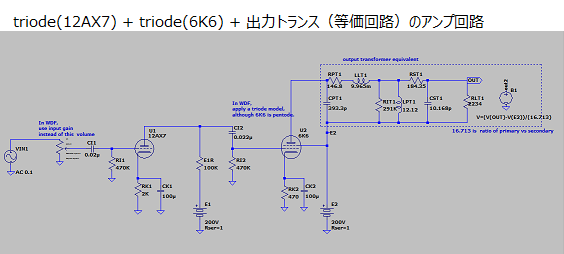
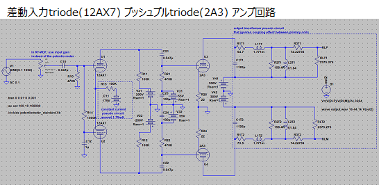
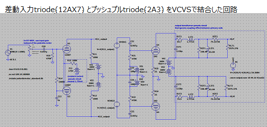

Wave Digital Filterの勉強
概要
Wave Digital Filterの動作サンプルrt-wdf_renderを
Windows10 + Visual Studio Community 2017の環境で動かすために変更したもの。
主な変更点
- stereo (2 channel)入力に対応 source
- 出力ファイル名を変更。 RenderThread.cpp
- CSVファイル出力の無効化。RenderThread.cpp
- Input Gain Controlの有効化。 wdfCCTAx1Tree.hpp wdfCCTAx4Tree.hpp
- downsamplingの無効化。 MainComponent.cpp RenderThread.cpp
- VisualStudio2017の追加。 wdfRenderer.jucer
- triode モデルの6K6 を追加 rt-wdf_lib
- triode モデルの2A3 を追加 rt-wdf_lib
- Newton法の反復計算の係数alphaの調整を追加 rt-wdf_lib
- Resampler機能の削除 必要に応じて外部のResamplerを使うこと
- 表示の大きさ変更
armadillo-9.500.2の中のblas_win64_MT.dll lapack_win64_MT.dllを使いました。
主な追加点
- vcxプロジェクトファイル Builds/VisualStudio2017
- Fender Bassman tone stackのR-type adaptorのS-Matrixの計算 ToneStack_R-type_S-Matrix_compute
- 簡単な３極真空管Triodeアンプ回路のS E F M N 各Matrixの計算 Common_Cathode_Triode_Amp_SEFMN-Matrix_compute
- triode(12AX7) + triode(6K6) + 出力トランス（等価回路）のアンプ回路を追加 wdfTwoTriodeAmpTree.hpp Two_Triode_Amp_SEFMN-Matrix_compute
- 差動入力triode(12AX7) プッシュプルtriode(2A3) アンプ回路を追加 wdfSadouPushPullTriodeAmpTree.hpp Triode_Sadou_PushPull_Amp_SEFMN-Matrix_compute
- 差動入力triode(12AX7) とプッシュプルtriode(2A3) をVCVSで結合した回路を追加 wdfSadouPushPushVCVSConnectionTriodeAmpTree.hpp Triode_Sadou_PushPull_VCVS-connect_Amp_SEFMN-Matrix_compute
- channel毎にwdfを並列計算 openmpを使っているためコンパイラのOpenMPのサポートを有効にすること RenderThread.cpp



参照したもの
以下を展開したものに変更を加えました。以下で公開されている真空管と出力トランスのデータを使いモデルを作成しました。
ライセンス
GPL v3RT-WDF libraryがGPLのため、それに従うことになります。
Libsディレクトリーの中にある説明文を参照してください。
真空管アンプの入出力波形の例
Wave Digital Filterを使ってシュミレーションした真空管アンプ回路CCTA(x4)とJTM45の動作波形の例。真空管は非線形素子なのでサンプリング周波数を４倍に上げて計算している。
JTM45は歪ませる設定(input gain, volume)にしている。